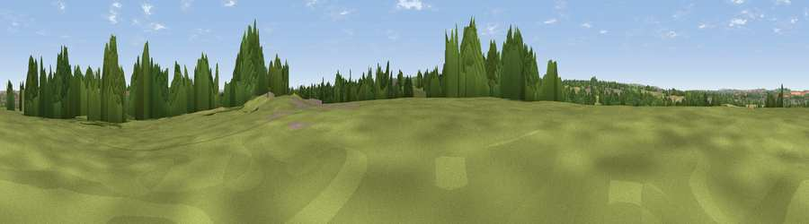

Viewpoint near Holcombe
#37420 in England · top 74% of its area beats it · near HolcombeWhere it is
The exact computed spot (ST 67600 50868). Click the marker for map links.
The view, rendered

A 360° render of this exact spot computed from the terrain model, tree cover and land cover — summer colours, afternoon light, calibrated against photographs of famous viewpoints. Real trees, hedges and buildings will differ in detail.
The panorama
Grey silhouette: terrain skyline in each direction (720 bearings, Earth curvature and refraction included). Dashed green: skyline with trees (+15 m) and buildings (+8 m) as obstacles. Blue strip: how far the ground is visible on each bearing.
Where the view opens
Wedge length = distance to the farthest visible ground on that bearing (vegetation-aware). Rings at 10, 25 and 50 km.
What fills the view
46% grassland · 26% woodland · 21% cropland · 8% built-up
Angular shares of the visible panorama (visual magnitude), not map area. Landscape diversity 0.53 (0–1 Shannon).
Key numbers
More beautiful places nearby
The staircase of upgrades: each row has a higher view potential than everything closer. Driving times are estimates from straight-line distance, calibrated against real road routing — check an actual route before setting out.
| Place | Direction | Drive | Score |
|---|---|---|---|
| Viewpoint near Stratton on the Fosse | W · 3 km | ~7 min | 61.0 |
| Viewpoint near Stoke St. Michael | S · 5 km | ~12 min | 67.2 |
| Viewpoint near Oakhill | SSW · 6 km | ~13 min | 71.3 |
| Viewpoint near West Horrington | W · 11 km | ~21 min | 73.2 |
| Viewpoint near Wookey Hole | W · 13 km | ~24 min | 73.5 |
| Viewpoint near Milton Clevedon | S · 14 km | ~26 min | 73.9 |
| Lamyatt Beacon | S · 15 km | ~26 min | 74.6 |
| Viewpoint near Lamyatt | S · 15 km | ~27 min | 77.8 |
51.25605, -2.46567 · source: osm peak · position refined by local search. Computed location — check access rights before visiting.